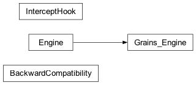
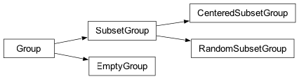
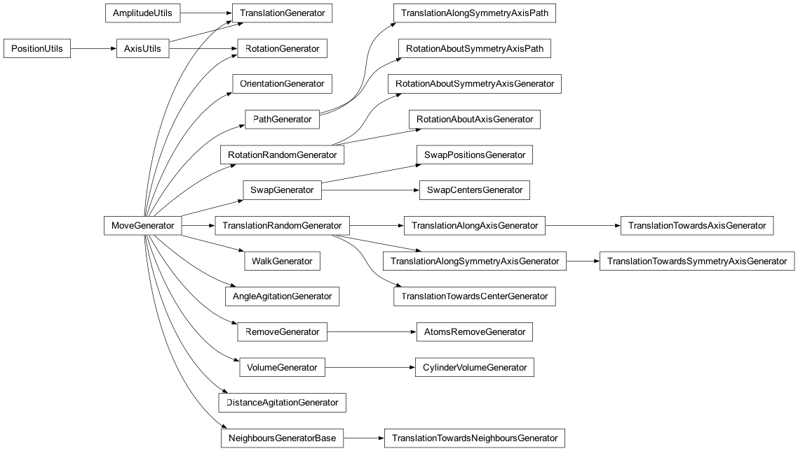
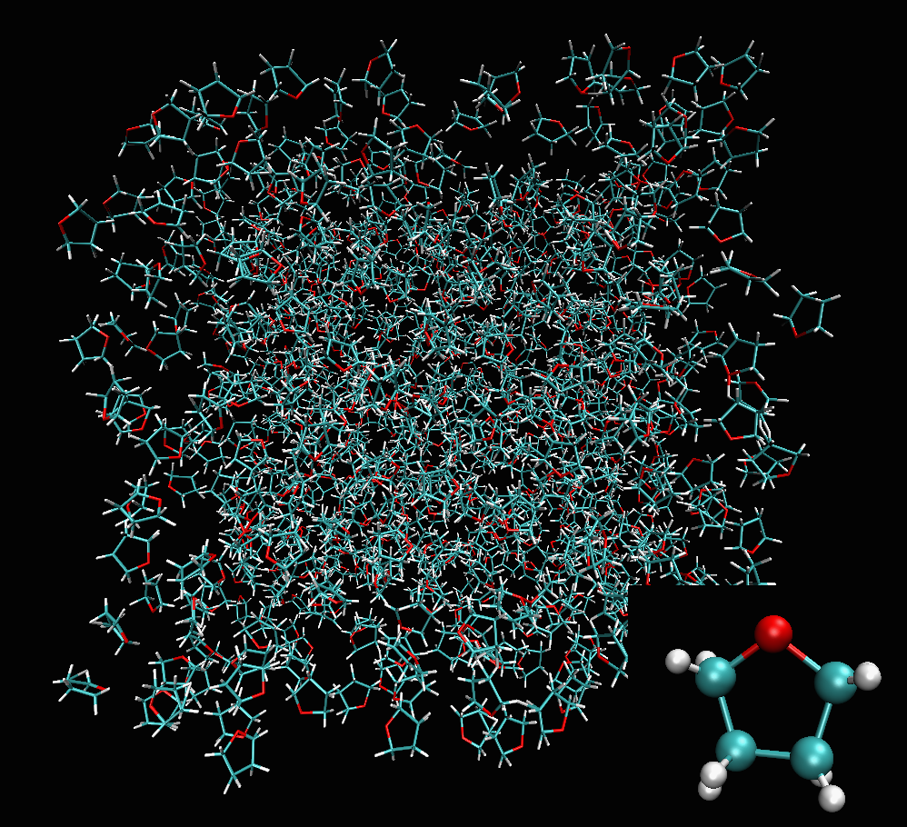
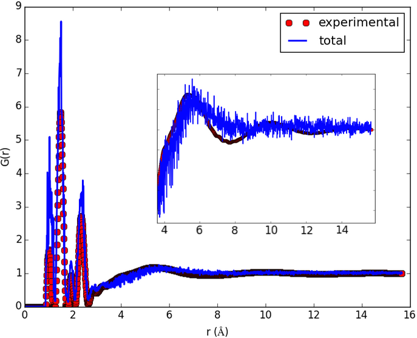
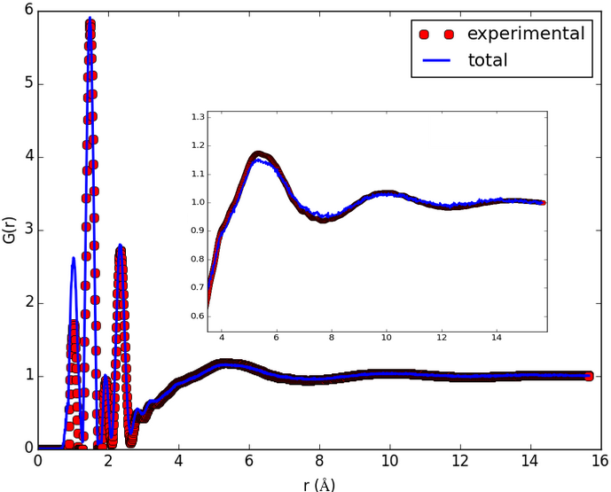

The Problem That Led to fullrmc¶
The idea behind fullrmc emerged from a practical problem that conventional atomistic simulation could not solve at the required scale. The original objective was to use Density Functional Theory (DFT) and Molecular Dynamics (MD) to understand the degradation of layered cathode materials in a battery advertised to retain its capacity for more than 3,000 cycles, yet in practice losing capacity after fewer than 10 cycles. The critical structural transformations were occurring at intermediate length and time scales, where neither the available experimental measurements nor conventional theoretical approaches could provide a satisfactory explanation.
For one specific material, I designed specialized force fields and interatomic potentials and spent roughly three months developing a simulation capable of reproducing its observed structure. The result was scientifically useful, but the approach was fundamentally not scalable. Chemists could synthesize thousands of material variants, with experiments producing new results far faster than bespoke force fields and simulations could be developed. Every new composition or structural hypothesis could require another carefully tuned potential, making conventional first-principles and Molecular Dynamics workflows too slow to keep pace with experimental discovery.
What was needed was a fundamentally different approach: a scalable stochastic framework capable of simultaneously exploring short-, medium-, and long-range structure, while allowing multiple competing structural hypotheses to be tested without requiring a new force field for every material. The system also needed to represent mixtures of structures, multiple phases and domain orientations, intermediate and transitional configurations, defects, and phase transformations, rather than assuming a single well-defined structural model.
Existing RMC approaches were not designed for this problem. They are primarily focused on refining atomic configurations and reproducing experimental observables, with limited ability to represent complex mixtures of competing structural models, evolving phases, domain populations, or coupled structural transformations. They also generally lack the computational and mathematical machinery needed to systematically explore large hypothesis spaces and escape the local minima that can trap conventional optimization.
fullrmc was conceived to address this gap. Its architecture makes it possible to combine multiple structural models, test competing hypotheses simultaneously, introduce and evolve defects, model phase transformations and heterogeneous domains, and optimize against experimental and theoretical constraints. The goal was not simply to create a better RMC program, but to build a general stochastic atomistic modeling framework capable of keeping pace with experimental discovery, where complex materials can be explored computationally without rebuilding an entirely new simulation methodology for every material or hypothesis.
– Bachir Aoun, Author & Developer of fullrmc
Why fullrmc?¶
fullrmc (FUndamental Library Language for Reverse Monte Carlo) is a highly optimized, scalable, and parallel stochastic modeling framework for atomistic systems. It solves an inverse problem: adjusting an atomic/molecular model until it best matches a set of experimental data. Rather than being limited to a conventional Reverse Monte Carlo (RMC) workflow, fullrmc provides a modular engine for testing scientific hypotheses, exploring complex configuration spaces, and refining structures against arbitrary constraints and objectives. Its architecture combines sophisticated mathematical and stochastic optimization techniques designed to improve exploration and escape local minima, while its highly optimized parallel computation enables large-scale simulations.
Actively developed, fullrmc already integrates a Theoretical Optimization Engine that can dynamically fit and optimize quantities such as scattering power, isotropic and anisotropic r-dependent thermal vibrations, experimental resolution, and Q-range cutoffs. The framework is also being expanded to incorporate sophisticated, widely used and proprietary atomic potentials, enabling true molecular dynamics and ab-initio calculations to be combined directly with stochastic modeling and experimental refinement.
With its Python-native, modular architecture, fullrmc is evolving from an RMC framework into a general-purpose computational platform for combining stochastic methods, physics-based simulations, experimental data, and first-principles calculations to explore and solve complex atomistic problems.
Citing fullrmc¶
Bachir Aoun; Fullrmc, a Rigid Body Reverse Monte Carlo Modeling Package Enabled with Machine Learning and Artificial Intelligence; J. Comput. Chem. (2016), 37, 1102–1111
Bachir Aoun; Stochastic atomic modeling and optimization with fullrmc; J. Appl. Cryst. (2022). 55, 1664-1676
fullrmc package¶



![Inheritance diagram of fullrmc.Constraints.AtomicCoordinationConstraints, fullrmc.Constraints.DistanceConstraints.InterMolecularDistanceConstraint, fullrmc.Constraints.DistanceConstraints.IntraMolecularDistanceConstraint, fullrmc.Constraints.DistanceConstraints, fullrmc.Constraints.BondConstraints, fullrmc.Constraints.AngleConstraints, fullrmc.Constraints.DihedralAngleConstraints, fullrmc.Constraints.ImproperAngleConstraints, fullrmc.Constraints.PairDistributionConstraints, fullrmc.Constraints.PairCorrelationConstraints, fullrmc.Constraints.RadialDistributionConstraints, fullrmc.Constraints.StructureFactorConstraints](_images/inheritance-d94de47b1b667d9e4be9293eaa60e806d0ce23f3.png)
Welcoming videos¶
Molecular system fullrmc stochastic fitting simulation. Groups are set to molecules and smart moves are applied. Translations along symmetry axes, rotations about symmetry axes, etc. |
Atomic binary Nickel-Titanium shape memory alloy system phase transformation stochastic simulation. Random atomic translations are enough to reproduce short range ordering. But swapping atoms is necessary to fit long range atomic correlations. |
Molecular system mere atomic stochastic simulation. Covalent bond electron density polarization is modelled by allowing fullrmc to explore across energy low correlation barriers. |
Reverse Monte Carlo traditional fitting mode compared with fullrmc’s recursive selection with exploring. This video shows how from a potential point of view exploring allow to cross forbidden unlikely barriers and going out of local minimas. |
Library Structure¶
Engine is fullrmc’s single entry point. It reads Protein Data Bank formatted atomic configuration ‘.pdb’ files and organizes computation around four core concepts:
Group: Engine doesn’t move atoms or molecules directly, but groups of atom indexes. A group can hold any number of indexes, including a single one, and indexes may repeat across groups. Grouping is what lets clusters of atoms (residues, molecules, etc.) move together, or a single atom move on its own. Engine’s ‘groups’ attribute lists all defined groups.
Group selector: a GroupSelector picks which group moves at each engine runtime step. Depending on the selector used, this can mean weighting some groups to be picked more often, allowing repeated selection and refinement of a single group, or choosing groups in order versus at random.
Move generator: every group has its own MoveGenerator, so each group can perform its own distinct, customizable kind of move when selected.
Constraint: a rule that governs some aspect of the configuration as groups move. Engine’s ‘constraints’ attribute lists all active constraints, which act as judges accepting or rejecting each move. An empty constraints list means every move is accepted.
Tetrahydrofuran simple example yet complete and straight to the point¶
## Tetrahydrofuran (THF) molecule sketch
##
## O
## H41 / \ H11
## \ / \ /
## H42-- C4 THF C1 --H12
## \ MOLECULE /
## \ /
## H31-- C3-------C2 --H21
## / \
## H32 H22
##
# ##################################################################################### #
# ############################### IMPORT WHAT IS NEEDED ############################### #
import os
import numpy as np
from fullrmc.Engine import Engine
from fullrmc.Constraints.PairDistributionConstraints import PairDistributionConstraint
from fullrmc.Constraints.DistanceConstraints import InterMolecularDistanceConstraint
from fullrmc.Constraints.BondConstraints import BondConstraint
from fullrmc.Constraints.AngleConstraints import BondsAngleConstraint
from fullrmc.Constraints.ImproperAngleConstraints import ImproperAngleConstraint
from fullrmc.Core.MoveGenerator import MoveGeneratorCollector
from fullrmc.Generators.Translations import TranslationGenerator, TranslationAlongSymmetryAxisGenerator
from fullrmc.Generators.Rotations import RotationGenerator, RotationAboutSymmetryAxisGenerator
# ##################################################################################### #
# ############################# DECLARE USEFUL VARIABLES ############################## #
pdfData = "thf_pdf.exp"
pdbStructure = "thf.pdb"
enginePath = "thf_engine.stc"
# ##################################################################################### #
# ############################## CREATE STOCHASTIC ENGINE ############################# #
ENGINE = Engine(path=None)
# if engine is not created and saved
if not ENGINE.is_engine(enginePath):
# create and initialize engine
ENGINE = Engine(path=enginePath, freshStart=True)
ENGINE.set_pdb(pdbStructure)
# re-set structure boundary conditions
ENGINE.set_boundary_conditions(np.array([48.860,0,0, 0,48.860,0, 0,0,48.860]))
# create and add pair distribution constraint to the engine
PDF_CONSTRAINT = PairDistributionConstraint(experimentalData=pdfData, weighting="atomicNumber")
ENGINE.add_constraints([PDF_CONSTRAINT])
# create and add intermolecular distances constraint to the engine
EMD_CONSTRAINT = InterMolecularDistanceConstraint()
ENGINE.add_constraints([EMD_CONSTRAINT])
# create and add bonds constraint to the engine
B_CONSTRAINT = BondConstraint()
ENGINE.add_constraints([B_CONSTRAINT])
B_CONSTRAINT.create_molecules_bonds( bondsDefinition={"THF": [('O' ,'C1' , 1.20, 1.70),
('O' ,'C4' , 1.20, 1.70),
('C1','C2' , 1.25, 1.90),
('C2','C3' , 1.25, 1.90),
('C3','C4' , 1.25, 1.90),
('C1','H11', 0.88, 1.16),('C1','H12', 0.88, 1.16),
('C2','H21', 0.88, 1.16),('C2','H22', 0.88, 1.16),
('C3','H31', 0.88, 1.16),('C3','H32', 0.88, 1.16),
('C4','H41', 0.88, 1.16),('C4','H42', 0.88, 1.16)] })
# create and add angles constraint to the engine
BA_CONSTRAINT = BondsAngleConstraint()
ENGINE.add_constraints([BA_CONSTRAINT])
BA_CONSTRAINT.create_angles_by_definition( anglesDefinition={"THF": [ ('O' ,'C1' ,'C4' , 105, 125),
('C1' ,'O' ,'C2' , 100, 120),
('C4' ,'O' ,'C3' , 100, 120),
('C2' ,'C1' ,'C3' , 95 , 115),
('C3' ,'C2' ,'C4' , 95 , 115),
# H-C-H angle
('C1' ,'H11','H12', 98 , 118),
('C2' ,'H21','H22', 98 , 118),
('C3' ,'H31','H32', 98 , 118),
('C4' ,'H41','H42', 98 , 118),
# H-C-O angle
('C1' ,'H11','O' , 100, 120),
('C1' ,'H12','O' , 100, 120),
('C4' ,'H41','O' , 100, 120),
('C4' ,'H42','O' , 100, 120),
# H-C-C
('C1' ,'H11','C2' , 103, 123),
('C1' ,'H12','C2' , 103, 123),
('C2' ,'H21','C1' , 103, 123),
('C2' ,'H21','C3' , 103, 123),
('C2' ,'H22','C1' , 103, 123),
('C2' ,'H22','C3' , 103, 123),
('C3' ,'H31','C2' , 103, 123),
('C3' ,'H31','C4' , 103, 123),
('C3' ,'H32','C2' , 103, 123),
('C3' ,'H32','C4' , 103, 123),
('C4' ,'H41','C3' , 103, 123),
('C4' ,'H42','C3' , 103, 123) ] })
# create and add improper angles constraint to the engine keeping THF molecules' atoms in the plane
IA_CONSTRAINT = ImproperAngleConstraint()
ENGINE.add_constraints([IA_CONSTRAINT])
IA_CONSTRAINT.create_angles_by_definition( anglesDefinition={"THF": [ ('C2','O','C1','C4', -15, 15),
('C3','O','C1','C4', -15, 15) ] })
# initialize constraints data
ENGINE.initialize_constraints()
# save engine
ENGINE.save()
# if engine is created and saved, it can be simply loaded.
else:
ENGINE = ENGINE.load(enginePath)
# unpack constraints before fitting in case tweaking is needed
PDF_CONSTRAINT, EMD_CONSTRAINT, B_CONSTRAINT, BA_CONSTRAINT, IA_CONSTRAINT = ENGINE.constraints
# ##################################################################################### #
# ########################### RUN ATOMIC STOCHASTIC FITTING ########################### #
# set groups as atoms. By default when the engine is constructed, all groups are single atoms.
ENGINE.set_groups_as_atoms()
ENGINE.run(numberOfSteps=100000, saveFrequency=1000)
# ##################################################################################### #
# ########################## RUN MOLECULAR STOCHASTIC FITTING ######################### #
## set groups as molecules instead of atoms
ENGINE.set_groups_as_molecules()
# set moves generators to all groups as a collection of random translation and rotation
for g in ENGINE.groups:
mg = MoveGeneratorCollector(collection=[TranslationGenerator(),RotationGenerator()], randomize=True)
g.set_move_generator( mg )
## Uncomment to use any of the following moves generators instead of the earlier collector
## Also other moves generators can be used to achieve a better fit for instance:
#[g.set_move_generator(TranslationAlongSymmetryAxisGenerator(axis=0)) for g in ENGINE.groups]
#[g.set_move_generator(TranslationAlongSymmetryAxisGenerator(axis=1)) for g in ENGINE.groups]
#[g.set_move_generator(TranslationAlongSymmetryAxisGenerator(axis=2)) for g in ENGINE.groups]
#[g.set_move_generator(RotationAboutSymmetryAxisGenerator(axis=0)) for g in ENGINE.groups]
#[g.set_move_generator(RotationAboutSymmetryAxisGenerator(axis=1)) for g in ENGINE.groups]
#[g.set_move_generator(RotationAboutSymmetryAxisGenerator(axis=2)) for g in ENGINE.groups]
## Molecular constraints are not necessary any more because groups are set to molecules.
## At every engine step a whole molecule is rotate or translated therefore its internal
## distances and properties are safe from any changes. At any time constraints can be
## turn on again using the same method with a True flag. e.g. B_CONSTRAINT.set_used(True)
B_CONSTRAINT.set_used(False)
BA_CONSTRAINT.set_used(False)
IA_CONSTRAINT.set_used(False)
## run engine and perform stochastic fitting on molecules
ENGINE.run(numberOfSteps=100000, saveFrequency=1000)
# ##################################################################################### #
# ################################## PLOT CONSTRAINTS ################################# #
PDF_CONSTRAINT.plot(show=False)
EMD_CONSTRAINT.plot(show=False)
B_CONSTRAINT.plot(lineWidth=2, nbins=20, split='element', show=False)
BA_CONSTRAINT.plot(lineWidth=2, nbins=20, split='element', show=False)
IA_CONSTRAINT.plot(lineWidth=2, nbins=20, split='element', show=True )
The result shown in the figures herein is obtained by running fullrmc Engine for several hours on molecular groups. Position optimization is achieved by using a RecursiveGroupSelector to refine every selected group position and alternating groups move generators. RotationAboutSymmetryAxisGenerator is used to fit the ring orientation, then TranslationAlongSymmetryAxisGenerator is used to translate molecules along meaningful directions. At the end, reset groups to single atom index and RandomSelector is used to select groups randomly. The Engine is run for additional several hours to refine atoms positions separately.
 a) Structure containing 800 Tetrahydrofuran randomly generated.¶ |
 b) Initial pair distribution function calculated before any fitting.¶ |
 c) Pair distribution function calculated after about 20 hours of Engine runtime.¶ |
{kind=link}
{kind=link}
{kind=link}